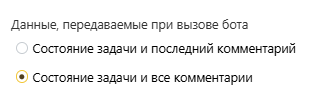

Шаблонный бот TS
Шаблонный бот TS написан как расширение стандартных методов библиотеки TypeScript. Он предоставляет ряд дополнительных возможностей, которые делают обработку задач проще и экономнее с точки зрения вызовов, а код лаконичнее.
Рекомендуется после завершения разработки бота у клиента стереть лишние функции, которые не использовались.
Код бота можно взять здесь, а в этой статье будут описаны подробности и аспекты использования некоторых методов.
Основная функция
Функция запуска сделана так, чтобы бот всегда отписал о результатах своей работы. Сначала создаётся расширенный клиент bot для выполнения запросов и обработки данных (подробное описание далее). Затем задача вызова исправляется (также описано далее). В этот момент может оказаться, что у бота нет доступа к форме. По умолчанию считается, что бот не может отрабатывать в таких задачах, поэтому выполнение функции прерывается.
Если конвертация успешна, то запускается обработка. Рекомендуется дописывать свою обработку в function_to_do и возвращать в ней результат, который должен стать финальным действием бота. Исполнение этой функции обёрнуто в обработку исключений. Если ваш код по какой-то причине упадёт в процессе, то в задачу вызова будет написано сообщение о неожиданной ошибке, а сама ошибка записана в консоль. Сообщения пишутся только в открытые задачи, закрытые задачи не переоткрываются. Обратите внимание, что в случае таких ошибок, бот ставит визу Против. Уберите это, если не уверены, что у вас будет возможность перезапросить согласования бота. Но исключение простановки визы может привести к спаму ошибок и циклическим перевызовам ботов друг друга.
Расширенные типы
Часть штатных типов для удобства были расширены. Это позволяет легче обращаться к данным в них.
ExtendedForm
Является расширением штатного типа FormResponse. Все атрибуты формируются в функции fix_form. Добавлены:
named_fields - словарь, в котором ключом является код поля, а значением само поле (не его значение). Это позволяет легко обращаться к полю по коду.
id_to_code - словарь, в котором проводится соответствие id и кодов.
all_fields - массив всех полей. В объекте fields есть не все поля, а только "свободные". Если поле находится в группе, то его нельзя будет найти при помощи form.fields.find(x=>x.id == id). all_fields представляет из себя массив, в котором есть все поля, в том числе и колонки таблиц.
created_by_bot - счётчик задач, которые были созданы ботом в рамках одного запуска при помощи функции create_task. Полезно использовать во время тестирования (если есть опасения, что бот зациклится и создаст лишнее) или если нам надо ограничить создание задач за один запуск (например, чтобы не перегрузить другой сервис)
ExtendedTask
Расширение штатного типа TaskWithComments, формируется функцией fix_task . По структуре похож на ExtendedForm. Также есть named_fields и all_fields. Добавлены named_comments, список комментариев расширенного типа ExtendedTaskComment.
Важно отметить, что изменения в named_fields провоцируют изменения и объектов fields и элемента all_fields. Например,
task.named_fields["org"].value = "Пайрус"
console.log(task.fields.all_fields.find(x=>x.id == task.named_fields["org"].id).value) //будет ПайрусExtendedTableRow
Расширение штатного типа TableRow.
Позволяет работать с данными табличной строки более удобно:
named_cells — словарь, где ключом является код ячейки, а значением сама ячейка (FormField). Это упрощает доступ к нужной ячейке по её коду, без поиска по массиву.
added_now — логическое значение, которое устанавливается в true, если ряд был добавлен в процессе текущей обработки запроса. Это полезно для понимания, какие строки появились «на лету» и могут требовать отдельной логики обработки.
Обратите внимание, что изменения в named_cells меняют и элементы оригинального cells. Это позволяет при обновлении таблицы передать всю таблицу. Пример:
//представим таблицу, в которой две строки
task.named_fields["table"].value[0].named_cells["column1"].value = 1 //в этот момент поле в массиве cells тоже изменилось
task.named_fields["table"].value[1].named_cells["column2"].value = "Вторая строка, вторая колонка"
await bot.comment_task(task.id, {field_updates: [task.named_fields["table"]]}) После отправки запроса API-сервис Pyrus проигнорирует в таблице все, кроме атрибута cells у каждого ряда и ошибки из-за неожиданных для обработчика атрибутов не будет
ExtendedTaskComment
Расширение штатного типа TaskComment.
Позволяет удобнее анализировать изменения, внесённые комментарием:
named_fields_changes — словарь, где ключом является код поля, а значением — обновлённое поле (FormField). Это даёт возможность быстро определить, какие именно поля были изменены данным комментарием, без необходимости вручную разбирать массив изменений.
ExtendedClient
Расширение штатного клиента PyrusApiClient.
Реализует кэширование данных (формы, справочники, задачи), автоматическую нормализацию структур (ExtendedForm, ExtendedTask, ExtendedTaskComment, ExtendedTableRow) и предоставляет набор вспомогательных методов для удобной работы с API. Рекомендуется все запросы, если есть соответствующий метод в ExtendedClient, выполнять через него.
В кеше у бота хранится:
Шаблоны форм (templates) - в виде словаря, где id это ключ, а шаблон формы значение
Профиль (profile_info) - в виде объекта типа ProfileResponse
Справочники (saved_catalogs) - в виде словаря, где id это ключ, а справочник значение
Задачи (saved_tasks) - в виде словаря, где id задачи выступает ключом, а объект ExtendedTask значением
Создание
При создании экземпляра класса нужно передать токен (с его помощью выполняются запросы) и id пользователя (полезно, когда надо отследить комментарии бота в задаче). По умолчанию все словари пустые, также как и profile_info
Замены вызовов стандартной библиотеки
Если у метода стандартной библиотеки есть замена в ExtendedClient, лучше использовать его. Все же остальные методы можно использовать как будто bot это обычный экземпляр класса PyrusApiClient:
await bot.announcements.create({text: "Объявление"})Запрос формы (get_form)
Замена forms.get({id});
Вместе с запросом формы, бот сразу превращает её в ExtendedForm функцией fix_form, добавляя все атрибуты. После фикса бот кеширует шаблон и при последующем запуске не делает лишний запрос, а берёт из памяти. В случае, если доступа к форме нет или в процессе конвертации формы (чего не должно произойти) случилась ошибка, функция вернёт null.
Запрос задачи (get_task)
Замена tasks.get({id: task_id});
Аналогично запросу формы, бот после получения задачи бот конвертирует её в ExtendedTask, используя fix_task. Бот кеширует состояние задачи, при последующих вызовах бот вернёт задачу из памяти. Важно: в этот момент бот не нормализует комментарии, это требует вызова отдельной функции. Функция имеет опциональный параметр update. Если он равен true, бот всегда запросит задачу из API, даже если в памяти есть состояние. По умолчанию, false
Комментирование задачи (comment_task)
Замена tasks.addComment(task_id, comment)
Кроме отправки комментария бот предварительно преобразует все поля типа Выбор с пустым значением. Если отправить null, PyrusAPI вернёт ошибку о том, что он не может привести значение null к полю multiple_choice
Также присутствует защита от обновления поля типа Форма удалённой задачей. При попытке совершить такое действие, будет возвращена ошибка об отсутствии задачи в реестре. Проверка выполняется, по наличию параметра subject. Обратите внимание, что если добавляете в боте значение к полю типа Форма, в нём обязательно надо передать subject или поле не будет обновлено.
После отправки комментария бот сохранит новое состояние задачи в кеше, если задача успешно обновилась. Если обновление было неудачным, метод возвращает текст ошибки. При успешной отправке, метод возвращает изменённую задачу.
Также метод поддерживает изменение характеристик задачи через поля. Подробнее здесь
Создание задачи (create_task)
Замена tasks.create(comment);
Если создание задачи провалилось, метод вернёт сообщение об ошибке. Если создание успешно, задача исправляется и кешируется.
Запрос реестра (get_registry_with_fix)
Замена forms.getTasks(form_id, form_req);
Каждая задача исправляется, но не кешируется, так как задача реестра не обладает всей информацией (нет комментариев, информации об авторе, маршруте и тд). Возвращается массив из исправленных задач или сообщение об ошибке
Запрос справочника (get_catalog)
Замена catalogs.get({id})
По умолчанию бот ищет справочник по id в кеше и только если не нашёл, делает вызов к API. Но если указан параметр update, бот запросит API, игнорируя кеш. Если запрос неудачный, вернёт строку с ошибкой
Обновление справочника (update_catalog)
Замена catalogs.update
После обновления, если справочник был в кеше, метод обновит его. Если в кеше его не было, добавление не происходит.
Запрос профиля (get_profile)
Замена profile.get()
Аналогично с предыдущими методами по умолчанию берётся значение из кеша, если не найдено, то делается запрос и заносится в кеш
Полезные методы
Эти методы обычно вызываются в процессе выполнения функций
Исправление задачи (fix_task)
По плану эта функция используется только один раз - при запуске бота, чтобы не делать лишний запрос к задаче вызова, лучше сразу запустить fix_task. Обычно запускается в get_task или get_registry_with_fix
В процессе выполнения функции наполняется словарь named_fields и заполняется массив all_fields (при помощи функции get_flat_fields). Также в этот момент ряды таблиц расширяются до типа ExtendedTableRow и создаются словари named_cells в рядах. Также набор cells дополняется недостающими (PyrusAPI не возвращает пустые ячейки).
Явно в самой функции это не прописано, но благодаря обработке в fix_form в named_fields попадают также дочерние поля текстовых полей типов Организация, Банк, Адрес и тд. Аналогично происходит в named_cells.
Также в качестве полей добавляются характеристики задачи. Подробнее здесь
Запрос пользователя по id (get_info_by_id)
Запрос полезен, если у нас где-то есть id пользователя (например в колонке маршрутизации справочника) для получения полной информации о нём. Также может использоваться для того, чтобы преобразовать роль в пользователя и по ходу выполнения обработки использовать данные роли как данные пользователя.
Получение словаря соответствия для вариантов Выбора (get_multiple_choice_dict)
Варианты выбора в поле типа Выбор хранятся неудобно и присутствуют только в поле формы. Поэтому для получения словаря вариантов используется этот метод:
Для полей типа Выбор он вернёт словарь соответствия заголовка выбора и его id
Для остальных полей метод вернёт пустой словарь
Добавление строки в таблицу (add_row_to_table)
Полезный метод, чтобы после добавления ряда указанный ряд не отличался от уже существующих. В нём полный состав cells и named_cells, корректный row_id. Сильно экономит место в основных функциях. Пример использования
let new_row = await bot.add_row_to_table(
return_task.named_fields[parent_table_code].value as ExtendedTableRow[],
return_task.named_fields[parent_table_code].id,
created_form.id,
return_task.id
);
new_row.named_cells[code].value = value;Исправление комментариев (fix_task_comments)
Проверяет есть ли в задаче уже named_comments. Если есть, то возвращает их, если нет, значит пока что обработка комментариев никогда не запускалась для этой задачи. Каждый комментарий проверяется на изменение полей и если поля менялись, в комментарии формируется словарь named_fields_changes. Если изменялась таблица, то каждый изменённый ряд будет приведён к типу ExtendedTableRow, при этом будут добавлены только изменившиеся ячейки в named_cells. Если же в комментарии не было изменений полей, то словарь будет пустым (но он не будет null или undefined)
После обработки комментариев они сохраняются в задачу, в соответственно и в кеш this.saved_tasks, если задача была получена методом get_task.
Восстановление последних значений (restore_last_values)
В метод передаётся список интересующих полей и возвращается их последнее состояние до комментария, вызвавшего бота. Однако последний комментарий можно добавить в выборку проверяемых, если проставить соответствующий параметр. Таким образом можно восстановить полную историю состояния поля, если постепенно увеличивать параметр depth (по умолчанию равный 1). Также можно проследить как поле исправлял конкретный пользователь.
Не работает для отслеживания конкретного ряда или конкретной колонки, только всей таблицы целиком.
Внутренние методы
Эти методы редко или никогда не вызываются вне класса ExtendedClient
Исправление формы (fix_form)
Преобразует FormResponse в ExtendedForm:
формирует полный список полей (all_fields),
создаёт словари:
named_fields — доступ к полям по коду
id_to_code — доступ к коду по ID поля,
подготавливает value для полей (таблицы → [], остальные → null),
обрабатывает «сложные» поля (например, Организация) для присвоения кодов дочерним полям. Таким образом вместо кодов Dadata<параметр> поля приобретают коды <код основного поля>*<заголовок параметра>. Например, org*ИНН. Это особенно необходимо, в случае, если полей типа Организация несколько на шаблоне. Тогда у нескольких полей будет код DadataINN. Далее это используется в fix_task при конвертации задачи
Добавляет в named_fields характеристики задачи как поля. Подробнее здесь
Получение всех полей (get_flat_fields)
Разворачивает вложенные поля в «плоский» список:
добавляет колонки таблиц (только для форм)
для групп (title) разворачивает вложенные поля и при необходимости колонки таблиц внутри них.
Другие функции шаблонного бота
Фиксация ошибок и предупреждений
В процессе выполнения кода вам может потребоваться отправить сообщение об ошибке или предупреждение в задачу. Для облегчения написания кода при запуске бота появляется error_log - словарь, в котором ключом является номер задачи, в которую надо отправить сообщение, а значением массив строк - предупреждений. Последовательность следующая:
Запускается функция function_to_do или другие ваши функции.
После их отработки проверяется лог ошибок.
Если лог не пустой, то во все задачи отправляется сообщение с ошибками. Сообщение отправляется только в случае, если с момента отправки последнего сообщения было оставлено не менее 5 текстовых комментариев. Но в консоль весь лог записывается всегда.
Для добавление сообщения в лог ошибок по задаче вызовите функцию add_error, передав в неё номер задачи и текст ошибки.
Например
if (!task.named_fields['field_code']) add_error(task.id, `Нет поля с кодом ${field_code}`);Код функции
//функция для обновления лога ошибок, точка входа для запуска процессов копирования в задаче
function add_error(task_id: number, error: string){
if (!error_log[task_id]) error_log[task_id] = [error];
else error_log[task_id].push(error);
} Конвертация характеристик задачи в поля
Методы fix_form, fix_task и comment_task адаптированы под работу с характеристиками задачи как с полями. Это может быть полезно как при написании кода, так и в случаях, когда в настройки бота подразумевают передачу полей (например, заполнение шаблона сообщения, перенос полей или выставление условий на их состояние).
Поля с номером задачи разных типов
Доступны поля типа: Число (код $task_id), Текст (код $task_link), Форма (код $task_field). Их можно использовать для указания в качестве целевой задачи задачу вызова. Например, когда надо конвертировать поле одного типа в другое. Пример:
{
"comment": "Перенос id пользователя в отдельное поле для формирования ссылки в ИПР",
"permitted_forms": [2335766],
"target": "$task_link",
"relations":{
"emp": "emp_id"
}
}Характеристики задачи
Часть свойств задачи превращены в поля, чтобы их можно было переносить в другие задачи или использовать в условиях для правил. Часть таких полей можно менять в процессе выполнения - тогда при отправке через метод comment_task изменится и состояние задачи
Код | Свойство | Тип поля | Комментарий | Заполнение |
| Закрыта/Открыта | Галочка. | Проставлена, если закрыта. | Если заполнить в процессе запуска, то при комментировании задача закроется. Если снять, задача переоткроется |
| Системный ответственный | Контакт | Можно изменить, пользователь будет назначен ответственным | Если заполнить в процессе запуска, пользователь будет установлен ответственным |
| Последняя дата изменения | Дата | - | |
| Этап задачи | Число | Отсчёт с 1 | - |
| Дата закрытия | Дата | - | |
| Номер задачи-родителя | Число | Если у задачи нет родителя, пустое. | - |
| Срок задачи со временем | Дата | Обратите внимание, что не может быть одновременно и | Установится срок со временем. Если передана просто дата (например, из поля Дата), то будет указана полночь по нулевой таймзоне (то есть, в Москве будет отображаться срок в три часа ночи) |
| Срок задачи | Дата | Обратите внимание, что не может быть одновременно и | Установится срок без времени. Если передать в переменную дату со временем, время будет обрезано |
| Длительность | Число | Продолжительность срока, если установлен срок с интервалом | Если передать вместе с due или due_date, будет установлен срок с интервалом |
| Конец интервала Срока | Дата | Конец интервала срока | При передаче нового значения в задаче будет установлен срок с интервалом. |
Результаты согласования этапов (закомментировано)
Для каждого этапа добавляется 2 поля: согласующий пользователь и результат согласования. Количество этапов считается по настройкам маршрутизации. Нумерация этапов для формирования названий считается с 1.
Также добавляется таблица с историей согласований.
По умолчанию, эта функция закомментирована, так как для её корректной работы требуется получение доступа ко всем комментариям и проход по всем комментариям, что может снижать скорость работы бота. Чтобы функция корректно заработала, снимите комментарии в методах fix_form и fix_task
Поля с согласующими пользователями
Для каждого этапа в словарь named_fields добавляется поле с кодом вида $approver_step_${step}, где step номер этапа с 1. Поле имеет тип Число. Если на этапе стоит только один пользователь/роль/бот, полю будет присвоено значение id этого пользователя. Если в форме выставлена настройка подключения пользователей с визой Против, то после её исполнения поле будет опустошаться, потому что на этапе, с точки зрения бота, стоит два пользователя. Если на этапе стоит Роль и виза не проставлена, поле будет иметь значение id роли. После простановки визы значение поля будет равно id поставившего визу пользователя.

Для корректной установки конкретного пользователя у бот должен быть доступ ко всем комментариям
Поля с результатами согласований
Для каждого этапа в словарь named_fields добавляется поле с кодом вида $approver_choice_step_${step_num}, где ${step_num} номер этапа с 1. Поле имеет тип Текст и может содержать 4 значения: approved, acknowledged, rejected или waiting. Если на этапе есть хоть один пользователь, не поставивший согласование, поле будет иметь значение waiting. Если на этапе есть хоть одна виза Против, поле будет иметь значение rejected. Если на этапе никого нет, поле будет пустым. Для корректной установки конкретного пользователя у бот должен быть доступ ко всем комментариям
Таблица согласований
При обработке задачи в словарь named_fields добавляется таблица с кодом $approver_table. В отличие от остальных дополнительных полей, у этого поля id не null, а -1, а у всех его колонок parent_id = -1. Колонки таблицы:
Обычные дополнительные колонки, как у всех таблиц с кодами $approver_table_$task_id и $approver_table_$row_id
Номер этапа ($approval_step) - колонка типа Число
Согласующий на этапе ($approver) - колонка типа Число, в ней хранится id пользователя/роли/бота, который стоит на маршруте
Дата согласования ($approving_date) - поле типа Дата с датой последней простановки согласования. Если виза не проставлена - пустая
Решение ($approval_choice) - поле типа Текст. Может иметь значения approved, acknowledged, rejected или waiting. Никогда не null
Согласовавший пользователь ( $approval_user) - колонка типа Число, в ней хранится id пользователя/бота, который поставил визу от лица согласующего (если это роль). Если согласования нет, ячейка пустая
Таблица заполняется по истории комментариев, поэтому важно, чтобы у бота был доступ ко всем комментариям. Таблица может пригодиться в следующих случаях:
Особые правила регистрации итогового решения. Если стандартное правило, описанное выше, не подходит, в кастомные функции можно будет дописать код, который заполнит специальные поля под каждый этап по нужному правилу
Формирование листа согласования - иногда требуется сделать особый шаблон листа согласования. Тогда сделайте таблицу на форме и заполняйте её на основе автоматически формируемой. Можно заносить в эту таблицу только интересующие вас этапы, если в параметр table_conditions настроек добавить условия на колонку $approval_step
История версий
История ведётся с 6 версии
7.0 (16.01.2026)
Добавлен метод обновления справочника
Добавлена конвертация характеристик задачи в поля
Добавлен лог ошибок
Добавлена защита от обновления полей типа Форма удалёнными задачами в метод comment_task
Исправлена баг при конвертации задачи, когда значение 0 у полей типа Число и Деньги превращалось в null
6.2 (14.10.2025)
Исправлена функция отправки комментария - теперь во время запуска функции комментирования штатной библиотеки комментарий копируется.
В класс ExtendedTaskComment добавлен массив flat_fields - плоский массив всех изменённых полей
Функция fix_task_comments адаптирована под новый класс
6.1.1 (02.09.2025)
Bug fix
Версия 6.1 (18.08.2025)
Добавлена более строгая типизация, для исключения ошибок в VS Code при локальном запуске